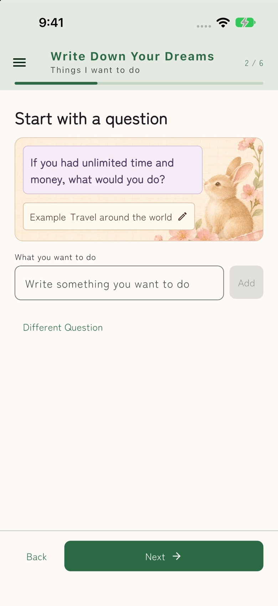

Funzioni di base
Gratis
Scrivi i tuoi desideri, registra i traguardi, conserva foto e note, immagina il futuro e ripercorri ciò che hai fatto. Puoi fare e ripristinare un backup, usare i design di base, condividere e reagire ai post della community.
 My Dreams 100
My Dreams 100
Una lista dei desideri tutta tua
Un weekend fuori. Una ricetta da provare. Una vita che ti incuriosisce.
Raccogli i tuoi desideri su schede che avrai voglia di riaprire.


Prima di arrivare a cento, comincia da uno.
Un caffè tranquillo, un libro che volevi leggere, una persona che vorresti rivedere. Scrivi quello che ti viene in mente e scegli le schede che ti piacciono. Ogni volta che riapri la lista, puoi trovare qualcosa da provare.
Lasciati ispirare da domande e suggerimenti per scoprire che cosa vorresti fare.
Scegli il design delle schede, lo sfondo e i colori che ti piacciono.
Tieni traccia dei passi che hai fatto e di come ti sei sentito lungo il percorso.
01 / Trova idee
Non servono cento idee tutte insieme. Rispondi a una domanda o sfoglia i suggerimenti, poi scrivi con parole tue ciò che conta per te.
«Se avessi tempo e denaro illimitati, che cosa faresti?»
In «Il mio io futuro» puoi raccogliere ciò che ti piace, ciò che per te conta e le tue idee per il futuro.

02 / Falla tua
Oggi una lista essenziale, domani un diario pieno di adesivi. Combina schede, sfondi e colori per dare carattere alla tua lista.


Questi tre design sono disponibili con un acquisto una tantum o un abbonamento Premium attivo. Ci sono anche design di base gratuiti.
03 / Immagina il futuro
Come vorresti trascorrere le tue giornate tra qualche anno? Annota quello che pensi oggi, anche se la risposta deve ancora arrivare. Aggiungi una foto o un’illustrazione dell’app e torna a rileggerlo quando vuoi.
Le risposte in «Il mio io futuro» restano sul tuo dispositivo e non vengono condivise automaticamente.

04 / Rivivi i ricordi
Aggiungi foto e note ai tuoi traguardi. L’album mensile raccoglie ciò che hai fatto e i ricordi che hai salvato. C’è spazio anche per i piccoli passi.

Quando cerchi un po’ d’ispirazione
Esplora il tema del mese o lasciati ispirare dai desideri degli altri. Condividi i traguardi che scegli, fai i complimenti a qualcuno o aggiungi un’idea alla tua lista.
Condividere è facoltativo. Puoi tenere la lista e le tue riflessioni per te.

Scegli ciò che fa per te
Funzioni di base
Scrivi i tuoi desideri, registra i traguardi, conserva foto e note, immagina il futuro e ripercorri ciò che hai fatto. Puoi fare e ripristinare un backup, usare i design di base, condividere e reagire ai post della community.
Acquisti una tantum
Scegli un pacchetto con schede e sfondi abbinati o quello con caratteri aggiuntivi. I contenuti acquistati singolarmente restano disponibili anche quando termina l’abbonamento Premium.
Premium
Usa l’app senza pubblicità e accedi ai design, agli sfondi e ai caratteri inclusi. Puoi anche modificare più etichette insieme e aggiungere e gestire liste personalizzate.
Consulta il negozio nell’app per conoscere i prezzi e i contenuti inclusi. I pacchetti di design e caratteri acquistati singolarmente non rimuovono la pubblicità.
Comincia da uno. Le domande e i suggerimenti possono aiutarti. Potrai aggiungerne altri ogni volta che ti viene un’idea.
La tua lista personale non viene pubblicata automaticamente. Scegli tu quali schede condividere con la community.
Esporta i tuoi dati con la funzione di backup e ripristinali sul nuovo dispositivo. Questa procedura non sincronizza automaticamente i dispositivi. Ripristina gli acquisti dallo store in cui li hai effettuati.
Scegli una scheda che ti piace e fai un po’ di spazio ai tuoi desideri.
Hai bisogno di aiuto o vuoi darci un suggerimento? Indica la versione dell’app e il modello del dispositivo per aiutarci a verificare.
Contatta l’assistenza dell’app Segnala un post pubblico o chiedi informazioni